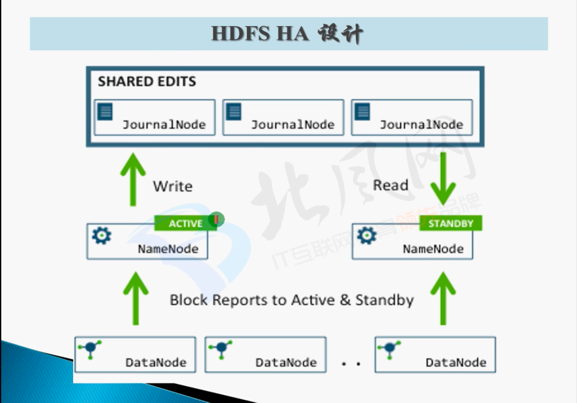
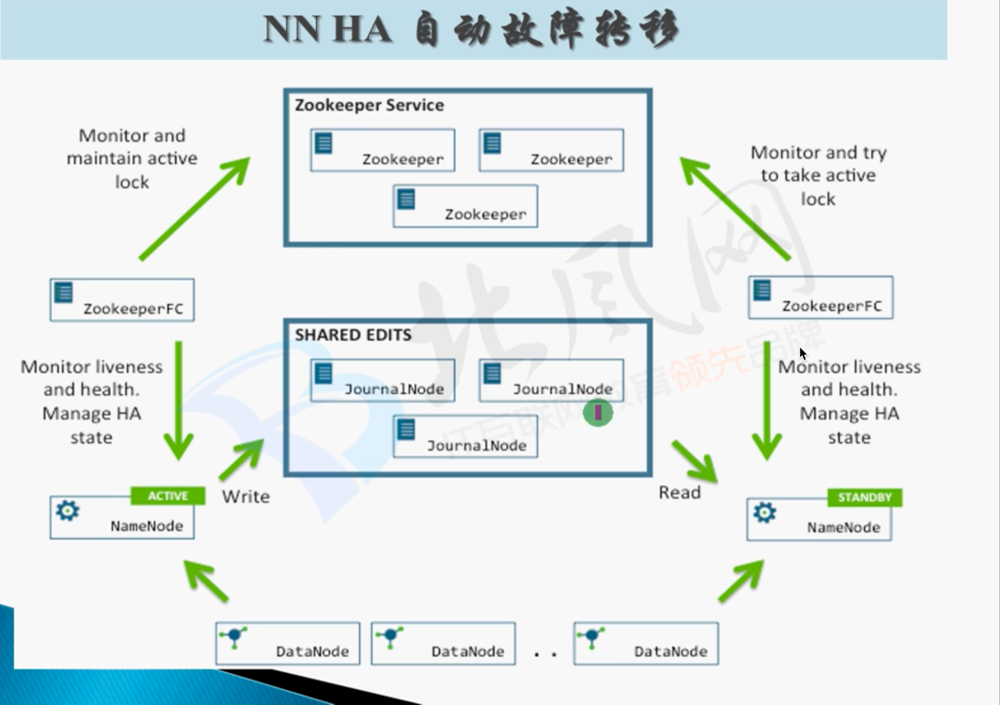

Hadoop的介绍
Hadoop是一个使用java编写的Apache开放源代码框架，它允许使用简单的编程模型跨大型计算机的大型数据集进行分布式处理。Hadoop框架工作的应用程序可以在跨计算机群集提供分布式存储和计算的环境中工作。Hadoop旨在从单一服务器扩展到数千台机器，每台机器都提供本地计算和存储。
Hadoop的架构
- MapReduce：这是基于YARN的大型数据集并行处理系统。
- YARN：这是分布式作业调度和集群资源（主要是内存和CPU内核）管理的框架。
- HDFS：提供对应用程序数据的高吞吐量访问的分布式文件系统。能够存储海量数据，具有分布式、安全性（提供副本）等特点
- Common：这些是其他Hadoop模块所需的Java库和实用程序。这些库提供文件系统和操作系统级抽象，并包含启动Hadoop所需的必要Java文件和脚本。
Hadoop的运行模式
- Local mode
- Distributed Mode
- 伪分布式
- 一台机器，运行所有的守护进程
- 完全分布式
- 有多个从节点
- 配置文件 slaves
- 伪分布式
完全分布式下的配置
hdfs
- hadoop-env.sh
配置java环境变量
- core-site.xml
fs.defaultFS配置NameNode的地址hadoop.tmp.dir配置Hadoop临时目录fs.trash.interval垃圾回收周期
- hdfs-site.xml
dfs.replication配置副本数dfs.namenode.secondary.http-address配置secondary namenode的地址dfs.datanode.data.dir设置DataNode实际存放数据的目录
- slaves
配置DataNode和NodeManager
yarn
- yarn-env.sh
配置java环境变量
- yarn-site.xml
yarn.resourcemanager.hostname配置resource manager的位置yarn.nodemanager.resource.memory-mb配置NodeManager资源yarn.log-aggregation-enable配置日志聚合yarn.log-aggregation.retain-seconds配置日志保存时间
- slaves
mapreduce
- mapred-env.sh
- mapred-site.xml
通过ntp来进行集群的时间同步
- 服务器编辑：/etc/ntp.conf
- 服务器编辑：/etc/sysconfig/ntpd SYNC_HWCLOCK=yes
- 客户端每十分钟校正：
crontable -e0-59/10 * * * * /user/sbin/ntpdate SERVER_HOST_NAME
Hadoop生态
- sqoop：SQL to Hadoop，即将关系型数据库如Oracle、Mysql等的数据导入到HDFS中
- Map读数据，Reduce写数据
- Cloudera Manager：方便部署安装集群、监控集群、配置同步集群、预警等等
- Zoo Keeper：开源的基于观察者模式的分布式框架，为分布式应用提供协调服务的Apache项目
各个监控界面
Hadoop HDFS
采用主/从架构，包含一个主节点（NameNode）和若干个从节点（DataNode）还有Secondary NameNode。在其上的文件采用分块存储，每个block默认68MB。
主节点：NameNode
介绍
用于存储文件的元数据，如文件名、文件目录结构、文件属性（生成时间，副本数，文件权限）以及每个文件的块列表和块所在的DataNode信息。其中元信息存放在内存中，加快访问。在NameNode的本地磁盘上存放着fsimage（镜像文件）和edites（编辑日志）。
- NameNode是一个中心服务器，单一节点（简化系统的设计和实现），负责管理文件系统的命名空间（namespace）以及客户端对文件的访问。
- 文件操作：NameNode负责文件元数据如文件名、文件目录结构、文件属性（生成时间，副本数，文件权限）以及每个文件的块列表和块所在的DataNode信息的操作，DataNode负责处理文件内容的读写请求，跟文件内容相关的数据流不经过NameNode，只会询问它跟那个DataNode的联系，不然NameNode会成为系统的瓶颈
- 副本存放在哪些DataNode上由NameNode来控制，根据全局情况作出块放置决定，读取文件时NameNode尽量让用户先读取最近的副本，降低块消耗和读取延时。
- NameNode全权管理数据库的复制，它周期性地从集群中每个DataNode接收心跳信号和块状态报告（Blockreport）。接收到心跳信号意味着该DataNode工作正常。块状态报告包含了一个改DataNode上所有数据块的列表。所以在集群配置的时候，当NameNode中显示某一个机子在运行的DataNode没有启动，可能是因为“心跳”没有被接收到，可能他们不在同一个网段。
安全模式
在NameNode的启动过程中，会有个一个安全模式
安全模式下，NameNode会等待DataNodes向它汇报block report
然后计算DataNodes blocks / total blocks，当这个比率超过99.9%之后，安全模式就会关闭
在安全模式下：
- 只能进行读取操作
- 不能进行其他修改操作
这种自动开启的安全模式，会自动关闭，而手动开启的需要手动关闭。
手动开启安全模式：
bin/hdfs dsadmin -safemode enter
从节点：DataNode
实际存储文件block的地方（还有块数据的校验和）。
- 一个数据块在DataNode以文件存储在磁盘上，包括两个文件，一个是数据本身，一个是元数据包括数据块的长度，块数据的校验和，以及时间戳
- 心跳每3秒一次，心跳返回结果带有NameNode给该DataNode的命令，如复制块数据到另一台机器，或删除某个数据块。如果超过10分钟没有收到某个DataNode的心跳，则认为该节点不可用。
- 集群运行中可以安全加入和退出一些机器。当一个DataNode离线后，NameNode会调用其他DataNode来恢复出丢失的数据。
我们配置的Hadoop的临时目录，里面有dfs、mapred、nm-local-dir三个目录，其中dfs中是DataNode中实际存放数据的地方。
Secondary NameNode
用来监控HDFS状态的辅助后台程序，每隔一段时间获取HDFS元数据的快照。
HDFS的启动过程
- 第一次启动HDFS集群
- 格式化HDFS文件系统
- 生成fsimage
- 启动NameNode
- 读取fsimage
- 开启DataNode
- DataNode向NameNode注册，并且定期向NameNode发送block report
- 用户操作HDFS文件系统，增删改查
- NameNode将操作记录存放在磁盘上的edits中
- 第n次启动HDFS集群
- 启动NameNode
- 读取fsimage
- 读取edits（操作记录）
- 生成一个新的fsimage + 一个空的edits
- 启动DataNode
- 用户操作HDFS文件系统
- 操作记录写入edits
- …
可以想象如果只是单纯的这种模式的话，那么如果整个集群长时间不重启，edits文件将会非常大，那么下一次重启合并的时间将会非常长，而解决这个问题的方案就是Secondary NameNode。即定期将fsimage和edits合并，并生成新的fsimage并且生成空的edits，周期大约1小时。
HDFS HA using QJM
- NameNode Active
- 向JournalNode写edits文件，超过半数写成功即可保证正确
- NameNode Standby
- 向JournalNode读edits文件，以此来保证两个NN的同步
- 接收所有DataNode的报告
- 配置要点
- 共享edits（通过JournalNode，至少3个，为奇数）
- NameNode（Active，Standby）
- Client（Proxy）
- fence（隔离，保证同一时刻只有一个NN对外提供服务）
- 使用Zookeeper进行自动故障转移（failover）


HDFS Federation
让不同的NameNode去保存不同应用的元数据，但是共用DataNodes
Distributed copy
集群数据迁移
YARN
每个从节点有一个NodeManager来管理该节点的资源，集群资源通过ResourceManager来管理。
主要组件
- ResourceManager
- 处理客户端请求
- 启动/监控Application Master
- 监控NodeManager
- 资源分配与调度
- NodeManager
- 单个节点上的资源管理
- 处理来自ResourceManager的命令
- 处理来自ApplicationMaster的命令
- ApplicationMaster
- 数据切分
- 为应用程序申请资源，并分配给内部任务
- 任务监控与容错
- Container
- 对任务运行环境的抽象，封装了CPU、内存等多维资源以及环境变量、启动命令等任务运行相关的信息
YARN上运行应用

- 应用提交给ResourceManager
- ResourceManager在一个DataNode上为一个应用（如MapReduce）创建Container（其中一个Container中运行Application Master）
- App Master进行任务划分，去找ResourceManager的ApplicationManager中注册
- 去找ResourceManager的去ResourceScheduler申请资源
- App Master去各个NodeManager要求启动任务
- NodeManager为任务开辟Container运行任务
- 每个任务向App Master汇报任务的状态
- 应用解决，App Master包裹ResourceManager任务结束，之后结束退出
MapReduce
MapReduce任务八股文
以WordCount为例
1 | import org.apache.hadoop.conf.Configuration; |
MapReduce的执行过程
在shuffle过程中可以自定义的过程有
partition：
1
public void setPartitionerClass(Class<? extends Partitioner> cls)
combine：
1
public void setCombinerClass(Class<? extends Reducer> cls)
sort：
1
public void setSortComparatorClass(Class<? extends RawComparator> cls)
group：
1
public void setGroupingComparatorClass(Class<? extends RawComparator> cls)
压缩：
1
2configuration.set("mapreduce.map.output.compress", "true");
configuration.set("mapreduce.map.output.compress.codec", "org.apache.hadoop.io.compress.SnappyCodec");
MapReduce数据类型
特殊的有：
NullWritable：当<key, value>中的key或value为空时使用
Text：使用UTF-8格式存储文本
MapReduce调优
Reduce Task Number：
1
2
3
4
5//java代码中针对某个任务配置
public void setNumReduceTasks(int tasks); //默认为1
//配置文件中
mapreduce.job.reduces=1Map Task输出压缩
- bzip2：最节省存储空间
- gzip
- lzo：解压速度最快
- snappy
压缩比：bzip2 > gzip > lzo
解压速度：lzo > gzip > bzip2
效果：
- map阶段写到磁盘IO减少
- reduce阶段，读取磁盘信息的网络IO减少
Shuffle Phase参数
1
2
3
4
5
6
7
8
9
10
11
12
13
14#The number of streams to merge at once while sorting files. This determines the number of open file handles.
mapreduce.task.io.sort.factor=10
#The total amount of buffer memory to use while sorting files, in megabytes. By default, gives each merge stream 1MB, which should minimize seeks.
mapreduce.task.io.sort.mb=100
#The soft limit in the serialization buffer. Once reached, a thread will begin to spill the contents to disk in the background. Note that collection will not block if this threshold is exceeded while a spill is already in progress, so spills may be larger than this threshold when it is set to less than .5
mapreduce.map.sort.spill.percent=0.80
#The number of virtual cores to request from the scheduler for each map task.
mapreduce.map.cpu.vcores=1
#The amount of memory to request from the scheduler for each reduce task.
mapreduce.reduce.cpu.vcores=1
所有的数据类型都实现了Writable接口，其中有write和readFilelds两个方法，用于序列化和反序列化，需要注意write和read的顺序相对应。还实现了WritableComparable接口，其继承了Comparable接口，因为在Map阶段会有根据key值sort的过程。
所以如果需要自定义key的类型的话，需要继承WritableComparable接口，value则不用。